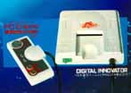

PC-Engine

The first 16-bit system ever was released to the Japanese market in 1988.
NEC revealed the PC-Engine and has continued to modify and upgrade it to
this day. In 1990, NEC released the PC-Engine to the US market calling
it the Turbo Graphx-16. While the Turbo Graphx barely made a dent in the
market at that time, it has seen a revival of late as many people
discover the power of this system. This system has also released a wide
variety of anime-based games. A more complete
history of the PC-Engine can be found at the Un-official Turbo Pages.
The Turbo Graphx-16 had a territorial lockout like most game systems. An
adaptor could be bought to play PC-Engine games on the Turbo Graphx-16;
however, the PC-Engine has no way of playing Turbo Graphx-16 games.
Back to Main Menu
Anime Video Game Resource Center © 1998 by Luis A. Cruz